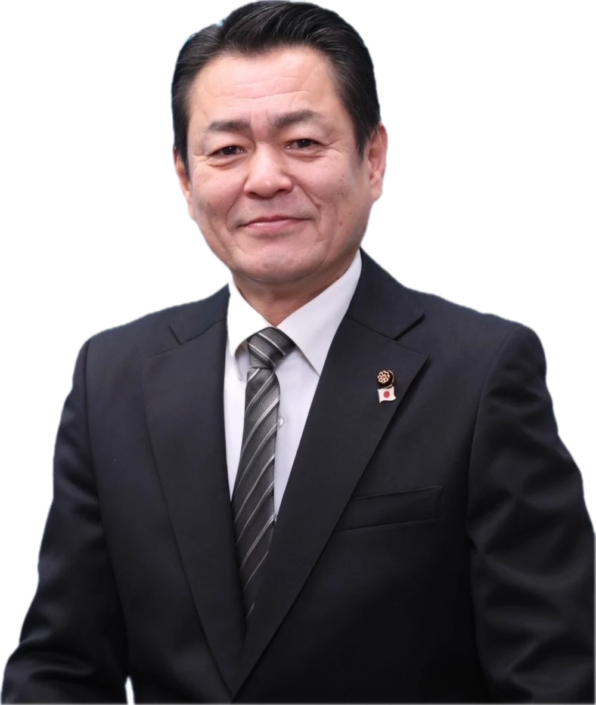
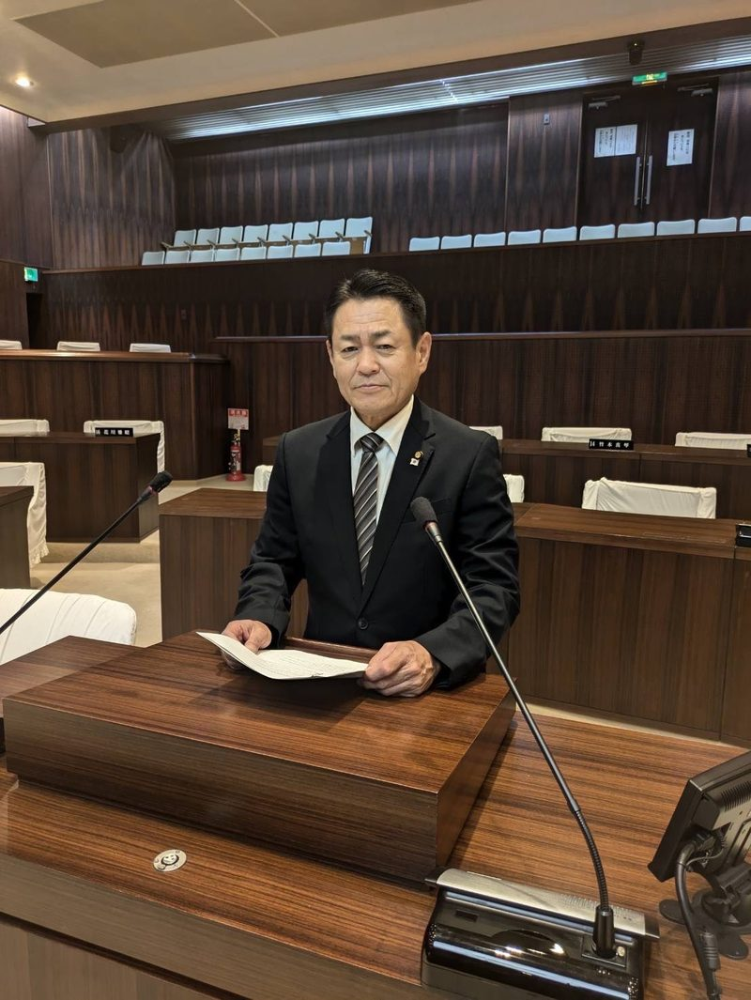
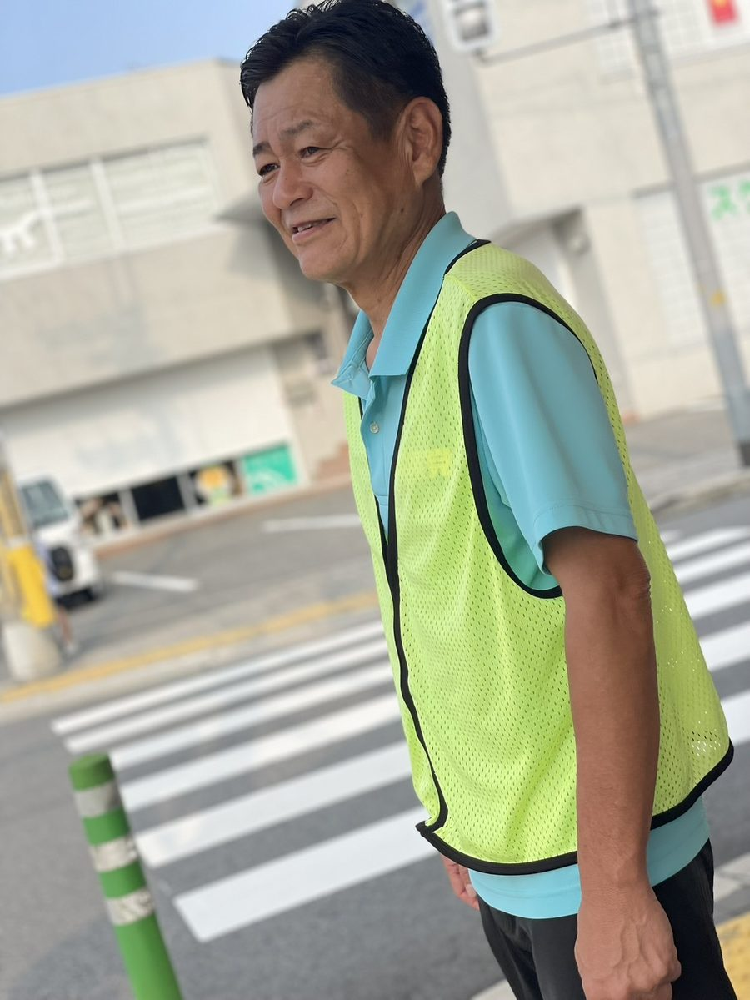
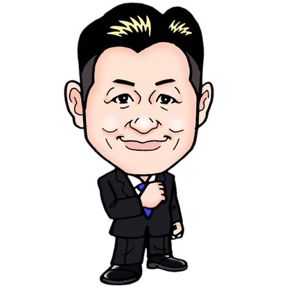

{{w}}
{{g.t}}
羽曳野市議会議員
みなさんと一緒につくる
誰もが住みたい街づくりを。

ごあいさつ
何にでも賛成する議員ではなく、皆さんの声を、市政に届ける議員でありたい。
市議会議員として6期目となる今日まで、多くのご相談やご提言をいただいてきました。
その経験を生かし、少しでも皆さんのご意見を市政に反映できるよう、必要な政策を提言し、訴えてまいります。
羽曳野市の未来のために、進めたいことがたくさんあります。前向きに歩んでいく夢のある羽曳野市を、みなさんと一緒につくるため、全力を尽くします。
羽曳野市議会議員黒川みのる
政策
これまで議会で取り上げてきたことを土台に、6期目に進めたいことをまとめました。

他にも
建て替えにかかる建設費と設計を見直し、耐震に強く、使いやすい新庁舎への建て替えを提案します。
少子高齢化が進む中、地域のコミュニティセンターなどの公共施設をネットワークで結び、市民に近い、利用しやすい行政サービスを優先します。
活動
朝は通学路に立って子どもたちを見守り、気になる場所には足を運んで、自分の目で確かめています。

{{a.tag}}
{{a.v}}
プロフィール

昭和42年9月17日生まれ。子ども5人の父、孫5人のおじいちゃんです。
私は市民目線で、皆さまのご意見を議会に訴えていきます。
市政へのご意見や、地域の困りごとを、このページからお送りいただけます。
いただいた内容は、黒川みのる本人が拝見します。お返事までに、数日いただくことがあります。
内容の種類
内容をご入力ください。
お名前をご入力ください。
お返事
ご連絡先をご入力ください。
お預かりした個人情報は、お返事のためだけに使います。
内容を拝見し、お返事をご希望の方には、順にご連絡します。
（公開前のページのため、送信は行われていません）